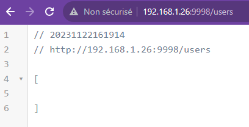
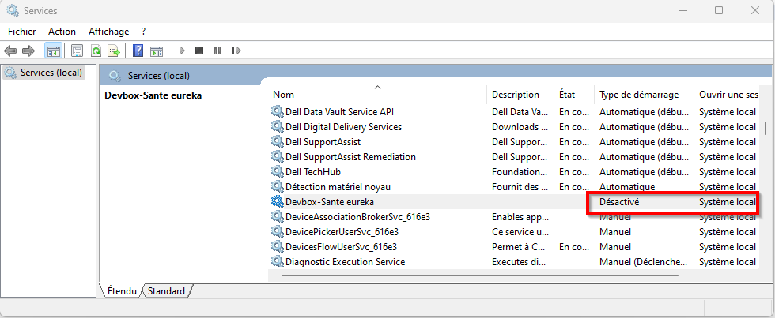
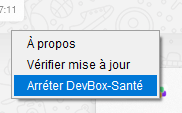
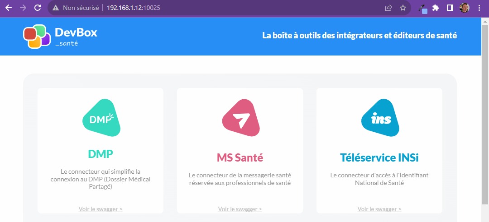
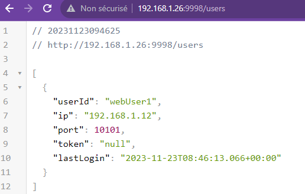

Eureka Demo
Use the eureka service to register the devbox-sante launched by users
With two workstations
A first use case eurekaservice as a directory server for workstations
!include https://bitbucket.org/devbox-sante/plantuml/raw/current/themes/theme-devbox-sante.puml
node "EurekaServer" {
[EurekaService:9998] as eureka
}
node "WorkstationWithCps" {
[DevBox-Sante:1000x] as devbox1 DEVBOX_COLOR
[CPS reader] as cps
}
devbox1 -l-> eureka : register
devbox1 -- cps
Install EurekaServer
- install the eureka service on a machine : https://clients.devbox-sante.fr/installer/client/id/DEV/DevBoxSante-client-dev-windows-x64-eureka-4.x.exe
- during the installation pick a port number for Eurekas : 9998 for example
- after the installation stop all devbox-sante running (except the eureka service)
- check that eureka is running on localhost with the installation port: http://localhost:9998/users and no process is running
- get its ip and check access from another workstation : http://192.168.1.26:9998/users

Install Workstation with CPS
- install on the workstation with the CPS card reader, the devbox-sante with one of the installer, preferably the one without eureka. If you use the installer with Eureka disable the service : 
- configure the devbox-sante with the following entries (make sure that the devbox-sante point to the eureka service) :
spring:
profiles.active:
...
- "EUREKA"
devbox-sante:
...
eureka:
service.url: "http://192.168.1.26:9998"
Run
Prerequisite, the eureka service is running on the EurekaServer machine.
Case1 : launch the DevBox-Sante with windows user login
- If there is any DevBoxSante running before stop it 
- execute the
DevBoxSante-client-dev.exeto launch with the right configuration - check on the log that the devbox-sante registered to the eureka service :
2023-11-22 17:30:13.964 INFO 51952 --- [ main] f.d.clients.eureka.DbxEurekaRestClient : Post http://192.168.1.26:9998/user : lfo, 192.168.1.12, 10025, null
- As a result on the eureka users list and more specifically with the endpoint
/user/lfo:

Considering the result of this endpoint, you know where to access the right DevBoxSante for the user lfo :

Case 2 : launch the DevBox-Sante from a web-context :
- stop previously DevBox-Sante launched
- from the browser launch the devbox-sante with providing that url :
devboxsante-client-dev://config?server.port=10101&sessionID=webUser1

Then, in every workstation a DevBox-Sante should be launched with a different user sessionID. Then you can do the following mapping :
One user sessionId = One IP:PORT = one CPS card reader
On Citrix or RDP Server
On Citrix or RDP Server everything is launched on the same host, so everything is available on localhost, but with different http ports.
!include https://bitbucket.org/devbox-sante/plantuml/raw/current/themes/theme-devbox-sante.puml
node "Serveur RDP" {
[EurekaService:9998] as eureka
[DevBox-Santé1:10001] as devbox1 DEVBOX_COLOR
[DevBox-Santé2:10002] as devbox2 DEVBOX_COLOR
}
node "Workstation user 1" {
[USB ports of CPS card reader 1] as usb1
}
node "Workstation user 2" {
[USB port of CPS card reader 2] as usb2
}
devbox1 -- usb1 : map USB pors ts
devbox2 -- usb2 : map USB ports
To share usb ports on rdp : https://superuser.com/questions/49285/access-local-usb-devices-from-a-remote-pc-via-remote-desktop